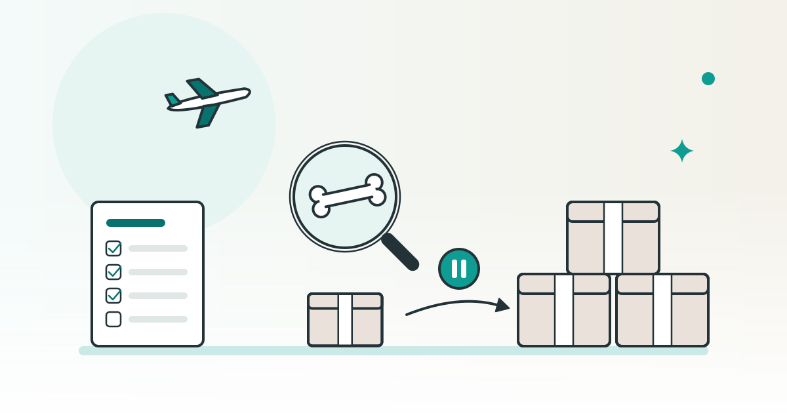

SHOPKIT コラム
小さく仕入れて試すにはペット用品のサンプル注文と見送る基準

ペット用品のサンプルを仕入れるときは、何を確かめたいかと、何が分からなければ追加注文を止めるかを先に決めます。写真で気になった商品を見本として取り寄せ、販売に使う説明を資料と実物に照らすための準備です。注文前の質問から、届いた後の保留・見送りの決め方まで整理します。
この記事は、完成品のネットショップを販売している SHOPKIT が書いています。
ここでは、犬服や布製マットなどの見本を検討する場面を例にします。見本を確かめた記録は、その見本についてのものです。次に届く商品も同じ状態だと決め付けず、まとめて頼む際の仕様や条件も別に確かめましょう。
- 見本を注文する前に、販売元へ聞く内容をそろえる。
- 実物で分かることと、資料や回答が必要なことを分ける。
- 追加の仕入れを保留・見送りにする理由を記録する。
まとめて注文する前に、見本で確かめることを決める
最初に「この商品をお客様へどう説明したいか」を書き、その説明に必要な情報を挙げます。たとえば犬服なら、色の見え方や寸法の示し方、留め具の位置などです。布製マットなら、表と裏の違い、届く物の範囲、お手入れの案内を資料と照らす項目にできます。
項目ごとに、見本を見たり測ったりして残せる内容と、販売元の資料が必要な内容を分けましょう。素材の名称、対象とする使い方、手入れの条件は、見た印象だけで決める説明にしないことが大切です。
見本の確認と、製品の安全性を確かめる試験は分けて考えます。使い方や注意事項が分からない段階で、犬や猫に使って反応を試す進め方は避けてください。安全情報を確かめられない商品は、仕入れ判断を保留にします。
確かめる目的が同じ商品を、最初から色や形の違いだけで広く頼むより、どの疑問を見本で解消したいかを絞って注文内容を決めましょう。仕入れる数の目安を一律に置かず、質問と確認の対象に合わせて考えます。
関連：犬服のネットショップを始める｜価格帯・原価・仕入れの考え方
見本を頼む前に、販売元へ聞く条件を質問表にする
見本を買えるかだけでなく、後から同じ仕様を注文できるかまで聞いておきます。質問には商品を特定するページや品番を添え、どの色・サイズ・付属品についての回答かが分かる形で残しましょう。
| 聞く項目 | 質問する内容 | 回答と残す物 |
|---|---|---|
| 見本と販売品の関係 | 見本は、追加注文で届く商品と同じ仕様か。素材・寸法・付属品に違いがあるか。 | 品番、仕様の資料、違いの説明、回答日。 |
| 注文できる単位 | 色やサイズごとに頼めるか。組み合わせや追加注文に条件があるか。 | 見本の条件と、追加注文の条件を分けた回答。 |
| 支払いと配送 | 見本代、送料などに何が含まれるか。発送予定はどの時点で決まるか。 | 費用の内訳と予定、変更時の連絡先。 |
| 届いた品が説明と違う場合 | 不足や仕様違いをどこへ伝え、どの記録を出すか。返送や交換の費用はどう扱うか。 | 申出先、申出の条件、費用の扱いが書かれた案内。 |
| 販売に使う資料 | 素材・用途・注意事項の資料があるか。提供写真や説明文は自分の店で使えるか。 | 資料の対象商品と日付、画像等の利用を認める範囲。 |
「同じです」「対応します」という回答だけなら、何が同じで、どこまで対応するかを聞き直します。見本の条件が追加注文にも続くと読み替えず、見本用と販売用の注文を分けて確かめてください。
支払う前に、質問表で何が未回答なのかを読み返しましょう。判断に必要な仕様や支払い条件が分からないままなら、注文を急がず、回答を待つか候補から外すかを決めます。
関連：ネットショップの仕入れ先はどう探す？個人が使える仕入れ先と確かめること
届いた見本は、写真と説明に使う情報がそろうかで見る
届いた見本と、注文前に見たページ・回答・仕様の資料を並べます。色や寸法などで違いを見つけたら、見本の品番や種類を取り違えていないかも含め、販売元に説明を求めましょう。到着時の検品は別の作業として行い、ここでは販売へ進めるための資料がそろうかを考えます。
| 説明したい内容 | 見本と照らす所 | 判断に足りないとき |
|---|---|---|
| 犬服の大きさや着せ方 | 寸法の資料と測る位置、開閉する部分、写真で伝える向き。 | 資料の対象サイズや測り方を質問し、見た目から対応する犬種を言い切らない。 |
| 布製マットの素材と手入れ | 部位ごとの素材、取り外せる部分、手入れの案内が指す範囲。 | 触った印象で素材を決めず、該当する資料を求める。 |
| 商品と付属品の範囲 | 写真に写る物と、注文に含まれる物の対応。 | 小物や交換部品が付くかを聞き、含まれる物が分かる写真と文を考える。 |
見た日、対象の品番、見本で分かったこと、資料から分かったことを分けて残します。たとえば「表地は柔らかく感じた」という自分の感想を、動物への効果や、すべての商品に共通する性能へ広げないようにしましょう。
分からない点が残る商品は、保留にして理由を残す
採用するか迷ったら、追加注文を止める条件と照らし、保留と見送りを分けます。保留は、回答や資料が届けば検討を再開できる状態です。見送りは、今のお店で扱う条件に合わず、今回の仕入れ候補から外す判断として残します。
| 残っていること | 判断の例 | 記録する理由・次の行動 |
|---|---|---|
| 仕様の資料が届いていない | 保留 | 不足する素材や寸法の資料を明記し、回答を受けてから見直す。 |
| 見本と追加注文の仕様の関係が分からない | 保留 | 同じ仕様を指定する方法と、変わる可能性がある部分を聞く。 |
| 注文の単位が店で扱う量に合わない | 今回の注文を見送る | 色やサイズの組み合わせなど、合わない条件を残す。 |
| 必要な情報を得られず、販売時の説明を用意できない | 仕入れ候補から外す | 問い合わせた内容と未解決の点を残し、追加注文へ進めない。 |
保留の記録には、誰に何を聞いているかと、再開に必要な資料も書きます。「何となくよかった」という感想だけでまとめて注文せず、説明に使う根拠と仕入れ条件がそろったかを読み返してください。
候補から外した記録も残しておくと、同じ写真の商品を再び見つけたときに、以前の判断理由と照らせます。条件が変わったという連絡を受けた場合も、変わった箇所の資料を確かめてから改めて検討しましょう。
海外から見本を取り寄せる前に、税と知的財産の確認先を押さえる
海外の見本は、商品代と配送の条件に加えて、輸入時の扱いを確認してから頼みます。税関の「関税、消費税等の税額計算方法」は、輸入品にかかる関税や消費税などの計算を案内しています。「見本」という呼び名だけで支払いの要否を決めず、用途、品物の内容、価格などを伝えて税関の相談窓口で確かめましょう。
知的財産については、税関の「侵害物品の取締りの概要」で、他者の知的財産を侵害する品は輸入できないと案内しています。写真や安さだけで問題がないと判断せず、権利について説明がつかない商品は注文を保留にしてください。
販売元に聞くときは、商品の出所や、写真・図柄などを利用できる根拠を分けて質問します。回答をもらったことだけで適法と判断せず、個別の権利や輸入の扱いで迷う点は、税関の窓口や専門家へ相談しましょう。
手続きの確認先を探す際は、税関のカスタムスアンサーの一覧も参照できます。この記事では、個別商品の税率や輸入の可否を判定していません。
関連：韓国から仕入れる方法｜現地・仕入れサイト・代行の違いと関税
お店を買って始める場合も、仕入れ情報と見本の条件を照らす
受け取れる仕入れ情報の範囲と、見本を頼む前に自分で質問する内容を分けて確かめましょう。SHOPKITの2026年10月15日時点のサービスページは、商品と店舗を整えて販売を始める準備をした状態でお渡しすると案内しています。お渡しする内容には、お店一式と仕入れの情報、運営・集客のマニュアルが含まれます。出典：お渡しするもの。
見本を注文できるか、追加注文で同じ仕様を指定できるかは、商品ごとの質問として用意しておきます。購入前の説明では、誰が仕入れ先へ質問し、どの資料で回答を確かめるかも整理しましょう。
仕入れ先の情報が付くことと、見本の費用・注文単位・仕様の確認が済んでいることは分けて考えます。受け取れる資料を聞き、足りない情報を質問表へ移してから、見本を頼むか検討してください。
よくある質問
ペット用品の見本は、何を決めてから注文しますか？
販売時に説明したいこと、見本と照らす項目、分からなければ追加注文を止める条件を先に決めます。見本と追加注文の仕様や、支払い・配送の条件も分けて質問しましょう。
届いたサンプルがよければ、同じ商品の追加注文へ進めますか？
見本を見た記録に加え、追加注文でも同じ仕様を指定できるかと、注文の単位や費用などの条件を確かめます。見本の状態だけで、次に届く商品も同じだと決め付けないようにします。
素材や使い方の回答がない商品は、どう扱いますか？
必要な資料や回答を待つ間は保留にし、再開に必要な情報を残します。情報を得られず販売時の説明を用意できない場合は、仕入れ候補から外す判断を記録しましょう。
海外の販売元へ見本を頼む前は、どこへ相談できますか？
税や輸入時の扱いは、品物の内容や用途を整理して税関の相談窓口で確かめます。知的財産の個別の判断で迷う場合も、税関の窓口や専門家へ相談してください。
※ SHOPKITのお渡しするものについては、2026年10月15日時点のサービスページの記載です。公的資料は2026年10月26日に確認しました。